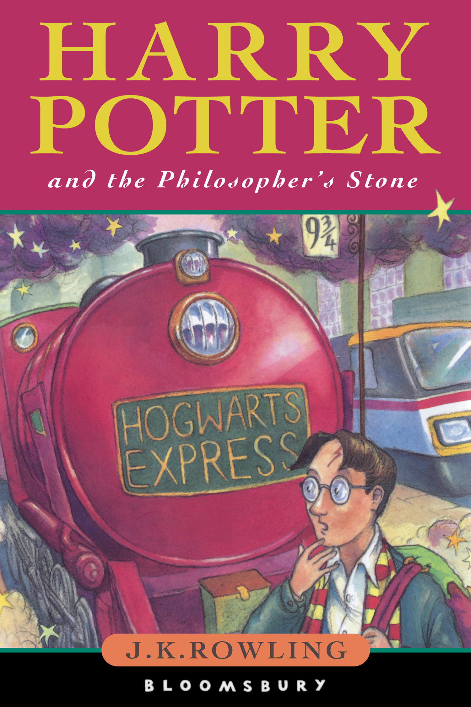

"Harry Potter and the Philosopher's Stone"
- Read on 2025-07-10
- Rating: ️️️️️
- Format: üéß (8 hours 25 minutes)
I remember reading this for the first time in 2001. It blew my mind. I couldn't read it fast enough. It's simple, clever, and easy to enjoy. A perfect gateway drug to fantasy, whether haters of Fantasy (but lovers of Harry Potter) want to admit it or not. One of those "why didn't I think of that?" type of series. I enjoyed the rest of the series as well.
This "reading" was purely an experience to see how I felt about Stephen Fry's narration of the book, as opposed to the reader Americans are used to - Jim Dale. I think Jim Dale does a good job with the books. I struggle with the voice he does for one of the main characters. Two things of note for Stephen Fry's reading - no voice stood out to me as one that I disliked. Secondly, the voice he does for Hagrid is strikingly similar to the actor who portrays him in the films, and I find it very enjoyable. The British reading, otherwise, was rather unremarkable. There were a couple words I noticed as they passed that were maybe different from the American version. Maybe they weren't, and the pronunciation simply caught my attention. But I couldn't tell you what they are at this point. For me, although both English narrators I've listened to are good, I think I can say I prefer Stephen Fry.
- Prior: The Collapse of the Third Republic
- Next: Slow Horses
- Read on 2025-09-01
- Rating: ️️️️️
- Format: üìñ (320 pages)
Second Review
This reading was with my youngest. It's fun to read the book with somebody experiencing the book for the first time. I'm curious how my performance differs from the other times I've read this book out loud. I still mix up accents and voices. But I'm just a dude/dad reading a book to his son. Fun way to spend some time together.
- Prior: Isles of the Emberdark
- Next: Old Man's War